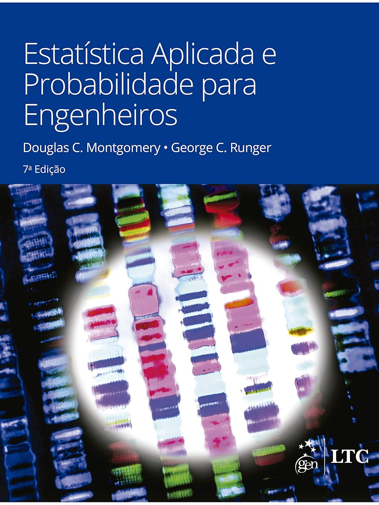
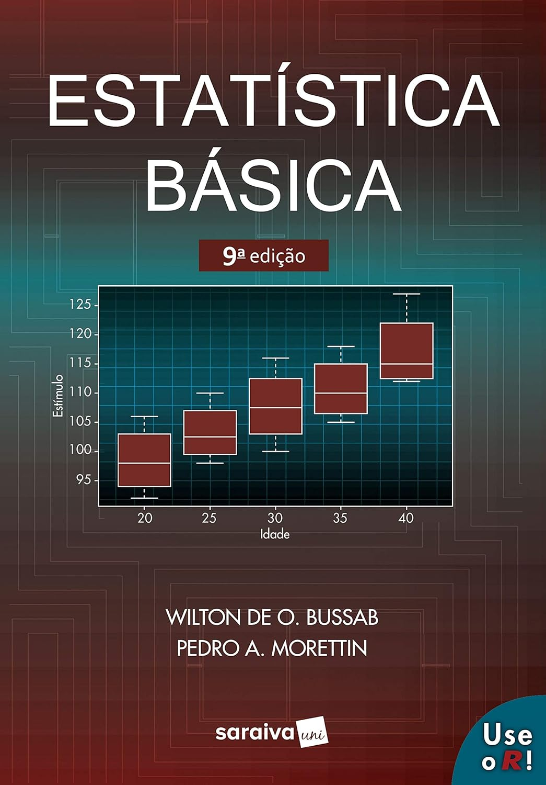
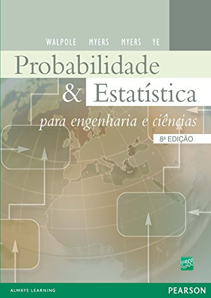

Apresentação da Disciplina e Conceitos Iniciais
ESTAT0011 – Estatística Aplicada
Prof. Dr. Sadraque E. F. Lucena
sadraquelucena@academico.ufs.br
http://sadraquelucena.github.io/estat-aplicada
Canais de Comunicação e Materiais da Disciplina
Grupo no WhatsApp: http://tiny.cc/eawpp
Informações da disciplina
- Componente curricular: ESTAT0011 – Estatística Aplicada
- Vagas Reservadas: Engenharia de Materiais
- Carga horária: 60 horas (4 créditos)
- Horário:
- Terças – 17h00 às 18h30
- Quintas – 17h00 às 18h30
- Docente: Prof. Dr. Sadraque E. F. Lucena
Objetivos
- Proporcionar experiências de aprendizagem que permitam ao estudante familiarizar-se com conhecimentos estatísticos fundamentais para a análise, interpretação e solução de problemas cotidianos e aplicados.
Ementa
- Regras elementares de probabilidade.
- Distribuição binomial, Poisson e normal.
- População e amostras.
- Testes de bondade de ajustamento.
- Uso de transformações.
- Distribuições de certas estatísticas amostrais.
- Noções de testes e hipóteses.
- Noções de delineamento experimental.
- Experimentos com um e dois fatores.
- Regressão e correlação.
Conteúdo programático
Estatística Descritiva e Confiabilidade de Dados
1.1. As fases do trabalho estatístico e classificação de variáveis em engenharia;
1.2. Séries estatísticas e representação tabular e gráfica (Histogramas e Boxplots);
1.3. Distribuição de frequências simples e em classes;
1.4. Medidas de Posição: Média, Mediana e Moda;
1.5. Medidas de Dispersão: Variância, desvio-padrão e coeficiente de variação (CV);
1.6. Erros de medição e tratamento de valores atípicos (outliers).
Conteúdo programático
Probabilidade e Modelagem de Fenômenos
2.1. Conceitos de probabilidade: Experimento aleatório, espaço amostral e eventos;
2.2. Probabilidade condicional e Teorema de Bayes aplicado a ensaios não destrutivos;
2.3. Variáveis aleatórias, esperança matemática e variância;
2.4. Distribuições discretas: Bernoulli, Binomial e Poisson (defeitos por unidade de área);
2.5. Distribuições contínuas: Uniforme, Exponencial e Normal;
2.6. Padronização (Z) e tabelas de probabilidade.
Conteúdo programático
Inferência Estatística e Tomada de Decisão
3.1. Noções de amostragem e erro padrão;
3.2. Distribuições amostrais da média e da proporção;
3.3. Intervalo de confiança para média e proporção;
3.4. Testes de hipóteses: Conceitos, erro tipo I e erro tipo II;
3.5. Teste t de Student para comparação de médias (amostras independentes e pareadas);
3.6. Testes de bondade de ajuste (testes de normalidade).
Conteúdo programático
Delineamento Experimental (ANOVA) e Modelagem
4.1. Análise de Variância (ANOVA) com um fator: Experimentos completamente casualizados;
4.2. Análise de Variância (ANOVA) com dois fatores e interação;
4.3. Tipos de correlação e Coeficiente Linear de Pearson;
4.4. Regressão Linear Simples: Estimativa de parâmetros e interpretação física;
4.5. Coeficiente de determinação (\(R^2\)) e análise de resíduos.
Conteúdo programático
Tópicos Especiais de Engenharia de Materiais
5.1. Introdução à Distribuição de Weibull;
5.2. Linearização da função de Weibull via logaritmos;
5.3. Determinação do Módulo de Weibull (\(m\)) para análise de confiabilidade de materiais frágeis.
Bibliografia Recomendada



Metodologia
- 2 encontros semanais, com 90 minutos de aula presencial cada
- 30 minutos de atividades extraclasse (hora-trabalho) para cada aula, indicadas pelo docente
Datas Importantes
Avaliações
- Avaliação 1: 07/05/2026 (quinta)
- Avaliação 2: 11/06/2026 (quinta)
- Avaliação 3: 16/07/2026 (quinta)
- Avaliação Repositiva: 21/07/2026 (terça)
Não haverá aula
- 02/04/2026: Quinta-feira santa (recesso acadêmico)
- 21/04/2026: Tiradentes (feriado nacional)
- 04/06/2026: Corpus Christi (recesso acadêmico)
- 23/06/2026: Véspera de São João (recesso acadêmico)
Conceitos Iniciais
População vs. Amostra
População
- Consiste de todas as unidades de interesse.
- Quando os dados coletados são da população, chamamos o procedimento de coleta de censo.
- Qualquer característica numérica de uma população é chamada de parâmetro.
População vs. Amostra
Amostra
- Qualquer subconjunto da população.
- Usada para fazer inferências sobre a população.
- Quando os dados coletados são de uma amostra, o procedimento de coleta é chamado de amostragem.
- Qualquer medida calculada a partir da amostra é chamada de estatística.
Tipos de Variáveis
Qualitativas
- São variáveis que consistem em atributos, classificações ou registros não numéricos.
- Exemplos: Tipo de tratamento térmico (têmpera, recozimento, normalização), Presença de defeito (sim / não)
Quantitativas
- São variáveis que correspondem a medidas ou contagens numéricas.
- Exemplos: Teor de carbono (%), Espessura de revestimento (µm)
Variáveis Qualitativas
Nominais
- Os dados que representam um conjunto de possíveis categorias e não possuem ordem.
- Exemplos:
- Tipo de polímero (PE, PP, PVC, PET)
- Método de ensaio (tração, impacto, dureza)
- Fornecedor de minério (Vale, CSN Mineração)
- Um caso especial são os dados binários, que possuem apenas duas categorias de valores (0/1, verdadeiro/falso).
Variáveis Qualitativas
Ordinais
- Dado categórico que tem uma ordem explícita.
- Exemplos:
- Classificação de dureza (Escala Mohs): 1- Extremamente macio a 10- Dureza máxima
- Nível de oxidação (Baixo, Médio, Alto)
- Classificação de acabamento superficial (ruim, regular, bom, excelente)
Variáveis Quantitativas
Discretas
- Podem assumir apenas valores inteiros, como contagens.
- Exemplos: Número de trincas em uma amostra, Número de peças produzidas por lote
Contínuas
- Podem assumir qualquer valor em um intervalo.
- Exemplos: Temperatura de tratamento térmico (°C), Resistência à tração (MPa)
Exemplo
Classifique as variáveis abaixo:
- Tipo de liga metálica (ex: Aço 1020, Inox 304)
- Número de microtrincas por cm² em uma cerâmica
- Temperatura de sinterização em °C (ex: 1250.5°C)
- Classificação de resistência ao impacto (Ruim < Regular < Bom)
- Quantidade de fases presentes na microestrutura
- Alongamento percentual após ensaio de tração (ex: 12.4%)
- Tipo de fratura observada (Dúctil ou Frágil)
- Rugosidade superficial (Ra) medida em micrômetros
- Nível de pureza do reagente (Técnico < Analítico < Ultrapuro)
Fim